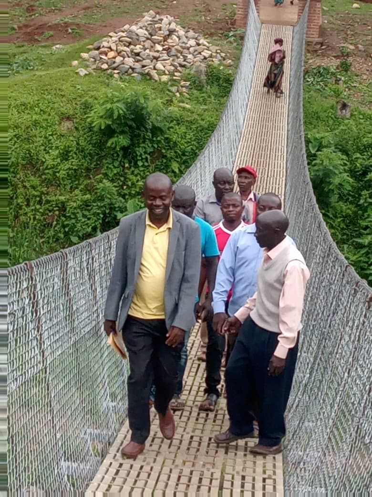

Hon. Kiiza Acrobert Moses is a seasoned educationist, devoted public servant, and dynamic political figure with an unwavering commitment to community empowerment. Born and raised in Uganda, Acrobert's journey began in the classroom as a teacher and grew into a mission to influence education policy, advocate for youth empowerment, and uplift the lives of ordinary Ugandans.
Kiiza Acrobert pursued his early education with distinction and continued to excel academically. He holds a Bachelor’s Degree in Arts with Education from Kyambogo University and a Uganda Advanced Certificate of Education from St. John's SS Nyakibale. His foundational academic journey was shaped by his time at Rukungiri Modern Primary School and Kigezi High School.

Acrobert’s teaching career began in 2007 at Makobore High School and continued at institutions like St. Jerome SS Kagongo and St. Charles Lwanga Secondary School. Through the years, he rose to become Head of Department, Director of Studies, and even Deputy Head Teacher, influencing not just students but entire school systems.
In addition to his educational career, Acrobert has held significant leadership roles in teacher associations, such as Secretary of Uganda National Teachers’ Union (Rukungiri Branch), and Vice Chairperson of the Uganda National Examination Board’s District Association.

Driven by a passion for transformational leadership, Hon. Acrobert entered politics to bridge the gap between education, governance, and community development. His vision centers on transparency, youth development, inclusive education, and equitable access to resources. As a political figure, he represents the values of integrity, service, and accountability.
“I believe every child deserves an education, every youth deserves a chance, and every citizen deserves dignity.”
Outside of public office, Acrobert has been active in youth mentoring, church leadership, and civil society engagement. He has led initiatives for rural school support, church construction, and youth seminars, demonstrating his commitment to hands-on change.
The journey toward a better Uganda requires all of us. Whether you are a student, parent, educator, or fellow citizen — your voice matters. Join Hon. Acrobert in building a future rooted in opportunity, education, and justice for all.